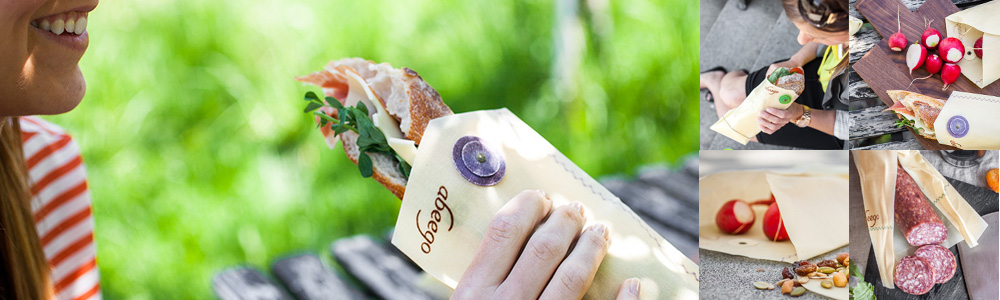

Buyer's Dashboard For Retailers
Abeego
Amalgamated Sope Company
Butter Baked Goods
CB's Nuts
Crazy Rumors
Concieved by Nature
Earthy
Element Botanicals
Endangered Species
Flip and Tumble
Green Tree
Hurraw
Moon Valley Organics
Mouthwatchers
People Towels
Pour Mason
Puremedy
Schmidt's Beauty
Sloane Tea
That's All
Tipu's Authentic Indian Chai
To-Go Ware
True Vibes
Yumbutter
Zimt Raw Chocolate


HOW IT WORKS
CARE
A little love will ensure a lasting relationship with your Abeego. With proper care, you can expect your Abeego to last over a year.
Hand-wash Abeego in COLD water and eco-friendly dish soap.
In COLD water the beeswax coating will be stiff, providing a stable surface to clean. Abeego washes like a plate, not a piece of fabric. It can handle a light scrub with a gentle dishcloth or sponge.
For a heavily soiled Abeego or if you have many to wash, run a bit of COLD water in your sink, add soap and immerse your Abeegos. Wash them like regular dishes. Do not let them soak for a prolonged period of time.
Dry your freshly washed Abeego with a towel for immediate use or place over a dish rack. Do not wring.
Biodegradable, alcohol-free soap is the best.
Tree resin and beeswax are soluble in alcohol. Check the ingredient list of your dish soap. If alcohol is in the first 5 ingredients it is too harsh for Abeego. If there are no ingredients listed and the manufacturer will not disclose them, consider replacing the soap with a suitable option.
Stains and creases are normal. We consider it character.
All materials used are natural so deeply pigmented foods may contribute to the personality of your Abeego. You can minimize staining by rinsing Abeego in cold water shortly after food has been removed. Avoid prolonged contact with oily or greasy foods.
A word about heat.
Abeego is not suitable for the dishwasher, microwave oven, direct heat or high temperatures.
Allow food to cool slightly before covering and avoid placing hot food directly on your Abeego. Keep away from all sources of heat and open flame.
Cutting your Abeego.
We recommend you avoid the temptation to cut your Abeego unless you really need to. Abeego is most functional in its full size. You can always over-wrap an item. It is your old relationship with plastic wrap that makes you think you have to cut your Abeego to fit the exact item you are storing. You are going to have your Abeego for a long time so keeping it in its full size will let you use it over and over on many sizes and shapes. If you do decide it must be cut use a rotary blade or very sharp scissors to create a clean cut.
Abeego is fabric and the edges are not finished. The wax coating holds all the fibers of the fabric together. Over time you may notice little frays around the edges. Trim them up with a rotary blade or sharp scissors.
Abeego is self-adhesive. You don’t have to wet it.
The combination of beeswax, tree resin and jojoba oil that coats the hemp and cotton fabric is very malleable at room temperature. It can adhere to virtually any solid food or container, so there is no need to wet it before you use it. Out of the package, your Abeego is ready to go.
In the fridge, your Abeego becomes stiff and holds its new shape. A return to room temperature will soon soften it.
People often ask us if Abeego stick to the dish like Press n Seal. They want to know if they can turn their bowl upside down and keep the contents inside. Our response is, not likely. Abeego sticks to itself not the item it’s wrapping. So if you want to flip your bowl over and test it out, we recommend doing so over a soft absorbent surface, like grass.
TIPS
For the love of cheese.
Remove cheese from the packaging it came in and wrap it in an appropriately sized Flat.
Half cut.
Form Abeego around the cut side of your avocado, cucumbers, tomatoes, melons, onions and pretty much any fruit or vegetable you need to keep. Pineapple has been known to eat Abeego, it is best stored in dish topped with a Flat.
Rise dough, rise.
The material is insulating and breathable so it is a perfect cover for rising bread dough. It is also suitable for covering fermenting foods such as yogurt, kefir and butter milk.
We like it saucy too.
The coating is fluid resistant, so moisture will not leak through the actual fabric. Sauce may add a bit of color to the patina.
A bit about meat.
Cold cuts and cooked meat on your sandwiches are friends of Abeego. Place leftover meat and raw meat in a dish, cover and store in the refrigerator. We suggest avoiding direct contact with raw meat.
Frozen food.
Abeego is happy to help out around the freezer for the short-term jobs. A month is the limit. It leaves long term freezing up to the other guys.
Storing your storage.
Roll or fold Abeego and keep in with your other food packaging in or your linen drawer. Keep between cutting boards to store flat.
Handy Bonus! Free Jar Opener.
Grab a Flat put it over the lid of the jar, hand it to the person closest to you to open. Why work harder when you can work smarter.
WHY ABEEGO?
We are driven by common sense and a persistent desire to help people change the way they think about their food. We are focused on providing a versatile material that can be used multiple times, in many ways, for varying degrees of food storage; that you can feel good about whole-heartedly. Besides, plastic film has only existed for 50-odd years. The human race has been storing food for ages.
WHO IS BEHIND IT?
Toni.
She is the creator, the brains and the face. She wades through the business world with a background in holistic nutrition and years in the service industry. Oh yeah, she feels like her background has totally prepared her to grow a global empire, while simultaneously changing worldwide attitudes and decades of enslavement to plastic cling!
Colin.
His fingerprints are all over the finished Abeego wraps. Well, figuratively anyway. He lugs the beeswax around, mans the production line, hand stamps the sheets with the Abeego logo and ensures everything meets Toni’s perfectionist nature. By his own reckoning, he has produced, branded and packaged roughly 83,417 Abeego sheets. The job is perfect for him as an aspiring writer. Turns out repetitive tasks give a man a ton of time to fabricate stories.
OUR TEAM.
Making Abeego is no longer a one-married-couple job. We rely on the most talented folks to hand craft each and every Abeego. We keep them fueled on the sweet scent of beeswax and the sure knowledge that they are helping to create a world with less food waste and more cool gifts!
HOW DID ABEEGO COME TO LIFE?
Toni’s Version:
Oh, you know, it was simple and easy, just like childbirth. I set a few rules and got right to work:
All ingredients used will be completely natural. No chemical alteration will be needed for the material to be effective. Each selected ingredient will have been used for preservation at some stage in human history. All ingredients have natural characteristics suitable for keeping food fresh. All ingredients are already approved by the FDA for food contact.
Colin’s Version:
I listened to idea after idea, thought after thought, in what was to become Abeego morning, noon and night, for almost 5 months. I took the long way home from work occasionally for the peace and quiet. Behind every good woman is a man.
WHY DO WE SHARE OUR BLEND?
Beeswax, tree resin and jojoba oil are directly related to the effectiveness of Abeego. If we don’t share the ingredients, we can’t really tell you why Abeego works and that doesn’t make a lot of sense to us.
WHAT ABOUT OUR WASTE?
We realized early in our business that the excess material left over after creating Abeego is not waste at all – it is potential for a waste-generated resource. We create business cards from it and share it in the form of Abeego Twisties, our version of the handy twist tie. What ends up in the waste stream biodegrades so you won’t find a massive floating island of Abeego in the middle of the ocean in 50 years.
Abeego Natural and original food storage
Abeego challenges assumptions about how to keep food fresh. It creates a breathable environment to prevent your food from spoiling. Abeego is inspired by nature and we believe natural materials are ideal for keeping food fresh for longer.